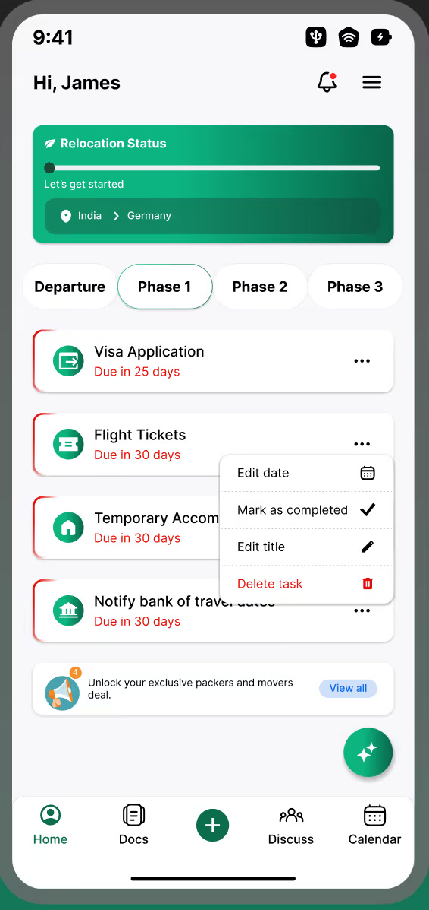
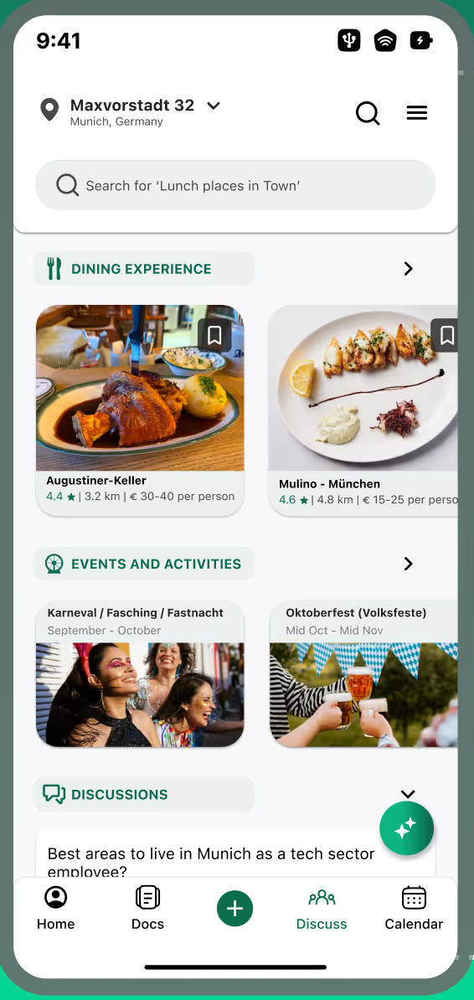

Settle | Relocation & Travel Partner
A personal relocation assistant that turns the chaos of moving to a new country into a clear, guided, and manageable process.

Project Overview
Problem: International relocation is rarely a seamless transition. It is a complex web of hundreds of fragmented tasks.
Role: To address this, I led an 8-week end-to-end design sprint to create Settle, a mobile relocation partner. Grounded in comprehensive user research, the app bridges the gap between travel and residency, organizing the chaos of moving into a clear, manageable roadmap that prioritizes users peace of mind.
Jump to hi-fi designsRelocation Market
Migration is no longer a niche event; it is a global mega trend. According to the 2024 UN World Migration Report, there are approximately 281 million international migrants globally. This number has doubled since 1990 [source]. The Organisation for Economic Co-operation and Development reports that over 6 million people [source] move permanently to developed countries every year. This excludes the millions of students and temporary "Digital Nomads". People move due to variety of reasons:
- 70% Economic Opportunity: Skilled workers moving for higher wages in example tech hubs (Berlin, London, SF).
- 20% Education: International students who need visa/housing support before they even graduate.
- 10% Family/Lifestyle: Joining a partner or seeking a better quality of life.
User Research
Our comprehensive research phase was driven by three key objectives: understand relocation challenges, Identify time-sensitive tasks, and learn how people currently organize moves.
Qualitative Research
We conducted 4 user interviews to learn about users’ pain points and preferences and understand their needs and expectations.
Quantitative Research
How challenging was it to manage and keep track of relocation-related tasks?
How challenging was it to find reliable and trustworthy information?
To what extent did you feel lonely or isolated after the move?
How stressful did you find the overall relocation process?
A survey was created to gather insights into users’ preferences on feature prioritization to find the common segment and validate our hypothesis.
Competitive Analysis
A competitive analysis revealed that existing solutions focus on isolated problems — such as task management, document storage, or relocation services — but fail to offer a unified, user-centric journey.
- Deel
- Localyze
- Notion
- Todoist
- Facebook Groups
- Google Drive
- Dropbox
A comparison of relocation, productivity, and support platforms
| Competitor insight | UX Gap Identified | Opportunity |
|---|---|---|
| Relocation tools are B2B focused | Individual users feel lost | Create a personal relocation platform |
| Task apps are generic | No relocation context | Phase based task structure |
| Document tools lack guidance | Users don’t know what’s required | “Documents you might need” section |
| Communities are scattered | Advice is hard to trust | In-app, location based discussions |
| No real time help | Users search externally | Embedded AI assistant |
Key Insights & Opportunity Areas
The Solution
While brainstorming the best approach for the project, I empathised with the user's problems and made conceptions based on research and available data upon which I implemented the designs.
Listed below are some major product requirements that I considered the most important to drive the overall user experience.
- Automatically generate a comprehensive relocation task list with clear timelines, allowing users to fully manage their journey by editing, deleting, or tracking progress in real-time.
- Add a feature that allows users to upload the required documents. The documents should be reviewed internally by us and anything missing should be clearly flagged.
- Add a support system where users can clear any doubt 24 X 7. The user journey to reach out to the support should be intuitive.
- Foster a sense of belonging by integrating community features, such as local event listings and discussion hubs, to help users feel 'at home' even before they arrive.
User Persona : Primary user

- NAME :
- Priya Sharma
- AGE :
- 27
- ROLE :
- Software Engineer
- CONTEXT :
- Moving from Bangalore, India → Berlin, Germany for a full-time job
- DEVICE BEHAVIOUR :
- Mobile-first, expects quick, clear actions
- Researches heavily but gets overwhelmed quickly.
- Saves links, screenshots, and PDFs across devices.
- Relies on WhatsApp groups / Reddit / friends for reassurance.
- Checks tasks multiple times due to fear of mistakes.
- Excited about career growth and living abroad.
- Anxious, uncertain, mentally overloaded.
- Wants reassurance that she’s “doing things right”.
- Complete all relocation tasks correctly and on time.
- Avoid fines, legal trouble, or missing mandatory steps.
- Feel in control instead of anxious during the move.
- Settle into life in Germany as quickly as possible.
- Doesn’t know what to do first.
- Overwhelmed by German bureaucracy & unfamiliar terminology.
- Information is fragmented across blogs, expat forums, and government sites
- Afraid of missing time-sensitive legal steps.
- Unsure which documents are critical vs optional.
Information Architecture
The information architecture is designed to reduce cognitive overload by organizing relocation tasks into clear phases, while supporting users with documents, community knowledge, and contextual AI assistance.

Design & Prototyping
Lo-Fi Ideation
The lo-fi ideation phase for Settle focused on defining a core structure that reduces cognitive load during the stressful relocation process. By mapping out a 'milestone-based' architecture, I visualized how to break down a complex international move into manageable, bite-sized steps before moving into high-fidelity details

Lo-Fi Designs

Mood-board

I chose a cohesive palette of ombre and layered greens—ranging from deep forest to light sage—to transform the high-stress, "red-alert" chaos of relocation into a guided journey of growth and stability. By blending these tones, the UI moves away from the clinical feel of a standard checklist and instead mimics the natural transition of "planting roots" in a new home.
Design System & Hi-Fi Designs

Easy Onboarding
The sign-up process is frictionless, allowing entry via email or phone. Immediately after, users complete a targeted questionnaire to capture essential move details. This input is instantly processed to generate a personalized relocation roadmap, converting all the requirements into a tailored set of actionable tasks.

The App Experience
To prevent cognitive overload, the roadmap is divided into logical phases. Users see only immediate, actionable items rather than a daunting long list, while retaining the flexibility to add or edit tasks. We also have a dedicated, encrypted hub that allows users to upload, review, and store sensitive paperwork, ensuring critical documents are always accessible. Additionally, we addressed social isolation through a Community Hub—a space to connect with peers. Finally, an integrated Calendar visualizes the timeline, keeping users aligned with their move date.

The UX through the journey
To prevent cognitive overload, the roadmap is divided into logical phases. Users see only immediate, actionable items rather than a daunting long list, while retaining the flexibility to add or edit tasks. We also have a dedicated, encrypted hub allows users to upload, review, and store sensitive paperwork, ensuring critical documents are always accessible. Additionally, we addressed social isolation through a Community Hub—a space to connect with peers. Finally, an integrated Calendar visualizes the timeline, keeping users aligned with their move date.

Feedback & Error states

Accessibility Considerations
Cognitive & Visual Accessibility
Contrast & Color: The primary brand palette maintains a contrast ratio of 3.7:1. This specifically meets WCAG standards for large text and graphical components, ensuring key UI elements remain legible.
Readability: Used high-legibility sans-serif fonts with generous line spacing to prevent "visual noise" during high-stress relocation tasks.
Interactive & Motor Accessibility
Touch Targets: All interactive elements (buttons, checkboxes, and tabs) maintain a minimum size of 44x44 dp for easy tapping while on the move.
Error Recovery: Error states provide explicit instructions on how to fix issues, reducing frustration for users with motor or cognitive impairments.
Assistive Technology (Screen Readers)
Semantic Hierarchy: Organized the app's hierarchy with clear headings so screen readers can easily phrase the relocation roadmap by milestones.
Live Regions: Progress bars and document icons include descriptive labels (e.g., "Relocation 40% Complete") to provide context to visually impaired users beyond just the visual graphics.
Linguistic & Inclusive Design
Plain Language: Translated complex legal and bureaucratic terms into simple, actionable language to support non-native speakers and users under high stress.
Contextual Help: Integrated an AI assistant (Sia) to provide immediate, simplified explanations for difficult document requirements, ensuring the app is accessible to all digital literacy levels.
Prototypes


Key Takeaways
- Designing for journeys is more effective than designing for features. This project reinforced the importance of structuring products around user progress and mental models, rather than isolated features. Organizing the app into relocation phases significantly reduced cognitive load and improved clarity.
- Information architecture plays a critical role in reducing anxiety. Relocation is an emotionally stressful experience. A well-thought-out IA can act as a reassurance mechanism, showing users what to focus on now and what can wait.
- Contextual visibility improves decision-making. Surfacing tasks, documents, and guidance based on the user’s current phase made the experience feel personalized and intentional, rather than overwhelming.
- Support systems are as important as functional tools. Integrating community discussions and an AI assistant highlighted that users need emotional and informational support, not just checklists, during major life transitions.
- Simplification is a design skill. One of the biggest challenges was distilling a complex system into a clear, high-level IA suitable for a portfolio, without losing the product’s depth or intent.